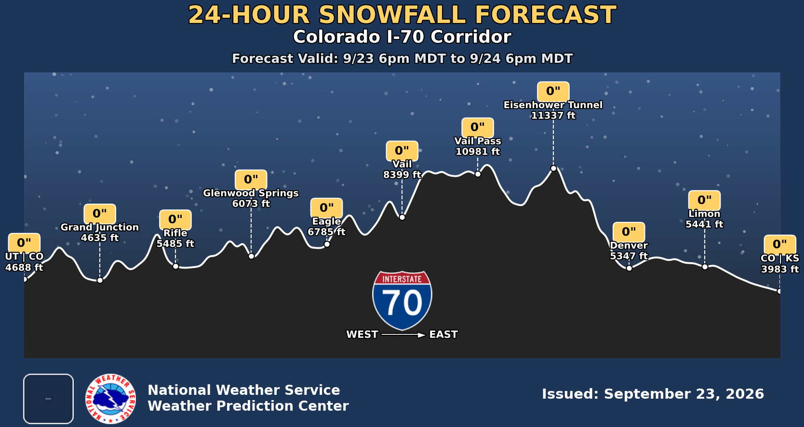

NWS Snowfall Forecasts
Western U.S. Terrain Cross-Sections
West ──► East Corridors
Colorado I-70 Corridor
CA I-80 Donner Pass
US-50 Lake Tahoe / Echo
WA I-90 Snoqualmie Pass
Utah I-80 Parleys Canyon
North ──► South Corridors
I-25 Front Range
I-5 Siskiyou Pass
US-395 Eastern Sierra
I-15 Monida Pass
24-HOUR ACCUMULATION
48-HOUR ACCUMULATION
72-HOUR ACCUMULATION
